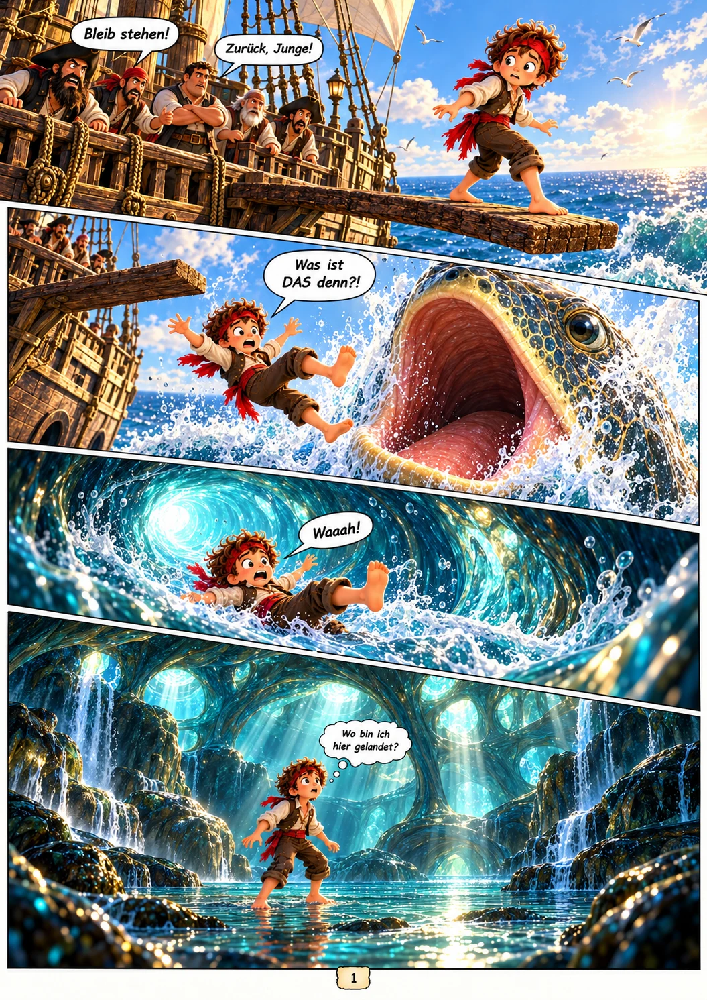
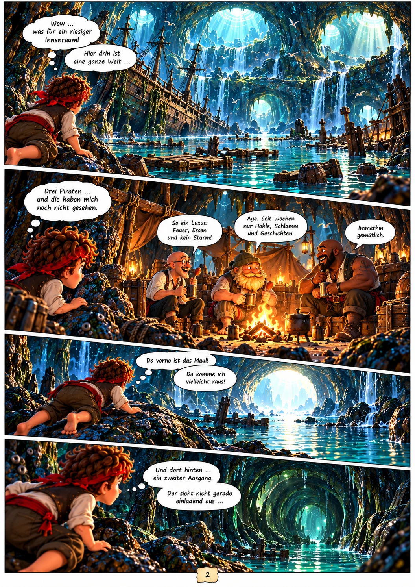

WILLKOMMEN IM THE TWO KINGS UNIVERSUM
Zwei Könige.
Tausend Ideen.
Geschichten, die weitergehen. Spiele, die dich packen.
Und Technik, die zu dir passt. Hier kommt alles zusammen.
DIE WERKSTATT
Eine Welt. Viele Möglichkeiten.
Von der ersten Skizze bis zum letzten Bauteil.
Entdecke, woran wir arbeiten.

SAM & PIET / BAND 1Sam & Piet — das Abenteuer beginnt
Fünfzehn fertige Bildseiten voller Piraten, Mut und Freundschaft.
BOGENJETZT SPIELBAR ↗
Ruhige Hand. Volltreffer.
Spanne den Bogen und meistere den Wind.
Großer Dino. Gutes Timing.
Neue 2,5D-Testszene: fünf Netze, drei Fänge und gutes Timing.
BUILD YOUR OWN
DEINE REGELN.PC-WERKSTATT ↗
Mehr Überblick. Besser bauen.
System importieren, Upgrades prüfen und Preise einordnen.
DIE POWER? Kaffee × Energy-Drinks · China vs. Deutschland INTERAKTIVEN CHECK STARTEN ↗
Wie viel Koffein steckt wirklich drin?
Arabica gegen Robusta, Kaffee gegen Energydrinks. Mit Deutschland-Benchmark, Schätzstatus und interaktivem Koffein-Rechner.
01 / SAM & PIET
Die erste Seite.
Das große Abenteuer.
Eine Planke. Ein offenes Maul. Und plötzlich ist Sam mitten in einer Welt, die niemand für möglich gehalten hätte. Entdecke den Auftakt unseres Abenteuercomics.
Kapitel 1 · 15 fertige Bildseiten · eine Brückenseite noch in Arbeit
Jetzt Comic lesen ↗
02 / WENIGER SCROLLEN. MEHR SPIELEN.
Bereit für
einen Volltreffer?
Unser Wüstenbogen wartet auf dich. Zielen, loslassen und die nächste Herausforderung meistern — direkt im Browser.
Wüstenbogen spielen ↗Maus, Touch oder Pfeiltasten + Leertaste · Querformat empfohlen03 / DIE PC-WERKSTATT
Dein nächster PC beginnt hier.
Plane deinen Aufbau und vergleiche Angebote.
Mit deinen Komponenten. Mit deinen Preisen.
Eigene Eingaben · keine Livepreise · keine automatische Kompatibilitätsprüfung
| Komponente | Modell / Notiz | Preis (€) |
|---|
Vor dem Kauf prüfen: CPU-Sockel, Mainboard, RAM-Generation, Gehäusemaße, Kühlung und Netzteilanschlüsse.
PREIS-CHECK
Welches Angebot lohnt sich?
Vergleiche zwei Angebote für dasselbe Modell inklusive Versand.
THE TWO KINGS